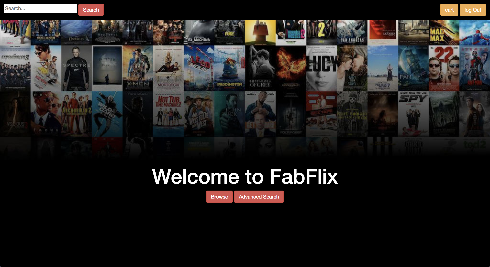
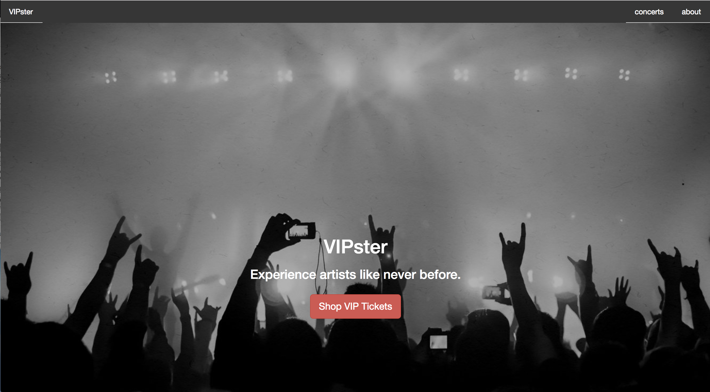
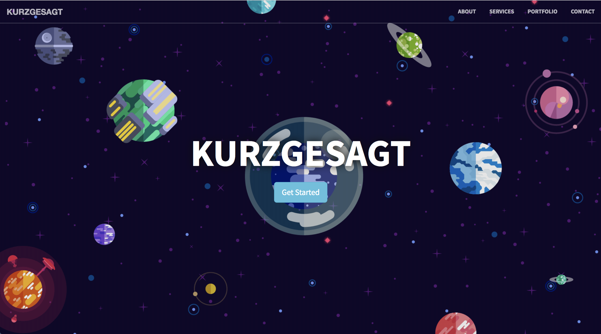

Nice to meet you!
I'm a software developer currently located in northern California. I recently graduated from UC Irvine with a B.S. in Software Engineering, and I'm on the search for a full time position as a developer. I've always been drawn to the intersection between design and development. The process of turning creative ideas into tangible products fascinates me, and I have a passion for the user experience! I have experience in front-end development and many project ventures into full-stack development under my belt. A career goal of mine is to deepen my understanding of full-stack technologies while maintaining my affinity for the front end. Right now, I'm excited to explore my opportunities to work with the greatest in tech. When I'm not staring at a computer screen you can find me outside, hanging out with my dog, at a music festival, or swimming!
Skills
View My Resume
LANGUAGES
Python
Java
HTML
CSS
JavaScript
SQL
PHP
JSP
JSON
TOOLS
Sublime Text 2
Eclipse
PyCharm
Android Studio
MySQL
GitHub
Linux/Unix
AWS EC2
Apache Tomcat
FRAMEWORKS
Django
Flask
AJAX
JQuery
React
REST
Bootstrap
DESIGN
Adbe Photoshop
Illustrator
Education
B.S. in Software Engineering
University of California, Irvine
2014 - Sept 2018
RELEVANT COURSEWORK
Programming in Python
Object-Oriented Programming
Data Structures & Analysis
Algorithms
Intro to Computer Networks
Software Design
Software Testing & Quality Assurance
Human Computer Interaction & UI Software
Data Management
Internet Apps Engineering
Experience
TENANTBASE
Front End Engineering Intern
Irvine, CA
June 2017 - Sept 2017
Worked directly under the CTO to apply Search Engine Optimization techniques to main search pages resulting in a leap in monthly site viewers. I was able to better understand many modern front-end web development practices and had the oportunity to learn from some amazing mentors.
HTML/CSS
JAVASCRIPT
DJANGO
WAGTAIL
PYTHON
GIT
SUBL TEXT 2
INWERKS
Android App Dev
Rancho Santa Margarita, CA
Dec 2016 - March 2017
Was the main Android os programmer for the inWerks application. I worked closely with a small team of mobile developers to enhance and maintain the iphone and android apps. I gained some exposure to android mobile UI design and gradle, and had the chance to learn and incorporate geocaching APIs.
JAVA
ANDROID STUDIO
UBUNTU
GIT
DELL EMC
Firmware QA Intern
Menlo Park, CA
June 2015 - Sept 2015
Joined a team of firmware engineers at DSSD, a startup within Dell EMC, to perform QA analysis on their main product. I gained experience in test engineering by writing suites that would monitor basic firmware functionality.
PYTHON
SUBL TEXT 2
RASPBERRY PI
GIT
Projects
CAPITAL GROUP CAPSTONE


Senior Capstone Project for my Software Engineering degree at UCI. A small team and I partnered with Capital Group, an investment banking firm, to create a microsite with some unique interactive tools that would help inform a new demographic of visitors. The site includes a landing page where a flow of features would allow users to better conceptualize investment banking, and ultimately give them the ability to contact local Capital Group representatives. Due to legal reasons, we are unable to keep the site deployed for extended periods of time, but feel free to browse the git repository.
HTML
CSS/LESS
JAVASCRIPT
FLASK
PYTHON
GIT
PYCHARM
FABFLIX

A full-stack web application created for an applied databases course. I created a movie-browsing site where the user could search for and purchase movies from databases populated with data gathered from IMDB. From this project I gained valuable exposure into many modern web development practices, front-end and back-end.
HTML/CSS
JAVASCRIPT
AJAX/JQUERY
SQL
JAVA
APACHE TOMCAT
AWS EC2
GIT
ECLIPSE
VIPSTER

A small RESTful eCommerce application that lists a variety of musical artists' VIP concert packages. The goal was to learn how to track user activity throughout a session and accurately display REST-retrieved information.
HTML/CSS
JAVASCRIPT
AJAX/JQUERY
SQL
JAVA
PHP
JSP
APACHE TOMCAT
GIT
ECLIPSE
KURZGESAGT

Just for fun, I made a small landing page for a Youtube channel that I adore. Kurzegesagt aims to explain big concepts to their viewers in easy-to- understand ways. I used them as a conduit to explore front-end frameworks that I was curious about. I find their work to be both intellectually and aesthetically pleasing! Check them out here: kurzgesagt.org!